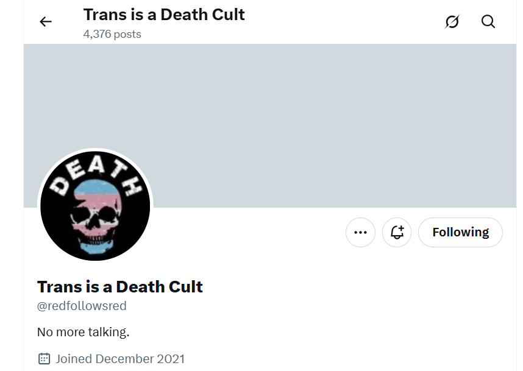
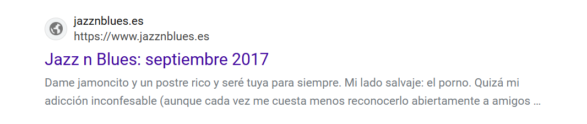

Cyber-stalking
Twitter and other social networks
- Accounts can be renamed, both name and account name.
- Accounts can be stripped of all content, and remade in a different way.
- One account can be duplicated into another.
- Fake accounts are available at the click of a button.
- I think there must be the following sorts of algorithms available:
- Track {example-account} and follow with {example-sentiment} where example-account = whoever they’re stalking/tracking/honey trapping, and example-sentiment can be romance, sex, fear, violence, etc.
- For honey trappers, there must be search algorithms for vulnerable accounts and you can see some of that in posts.
Helpful notifications
- In amongst the bombardment of porn and evil intentions, someone was giving me information.
- I believe it may have been trumpet teacher number one.
- It’s possible he betrayed them after a significant event between us, and then they all started betraying each other.
- Certainly, they were all grassing each other up, and telling me everything, which was a bit silly of them, but of course they assumed I would be completely destroyed, like all the others, so why not.
- Anyway, fake accounts like this one had helpful info:

- I saw this account just after I went public on X and was followed by thousands of accounts of night.
- Red follows red in Spanish/English means network follows network, and I took that to mean that criminal networks on X follow each other, keeping tabs on what the competition is up to.
Terror in Dénia

- It seems reasonable to assume the whole town must be being controlled and terrorized by hackers with an obvious porn obsession through threats to themselves or their children, daughters especially.
- Is this why it is so easy to drum up the significant resources required to target a lone foreign woman as I have been.